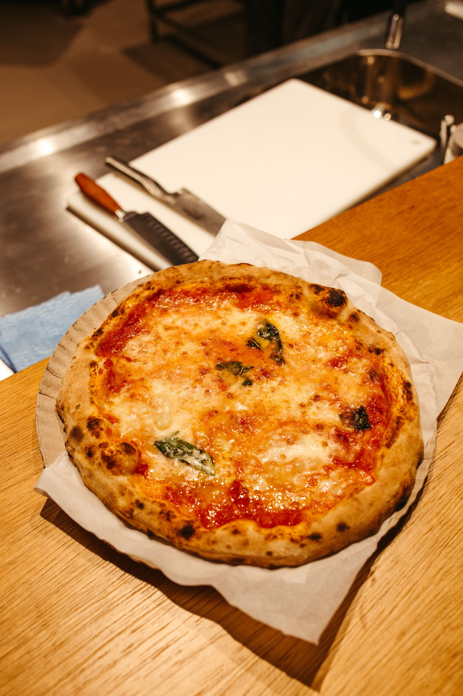
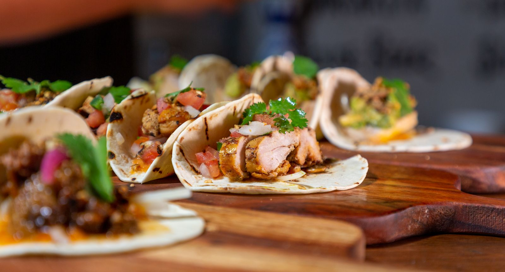
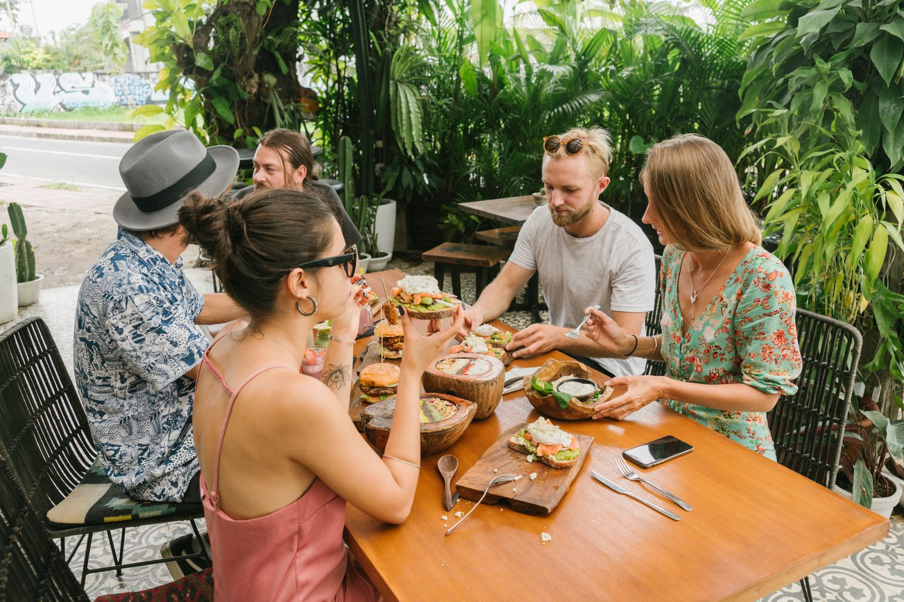
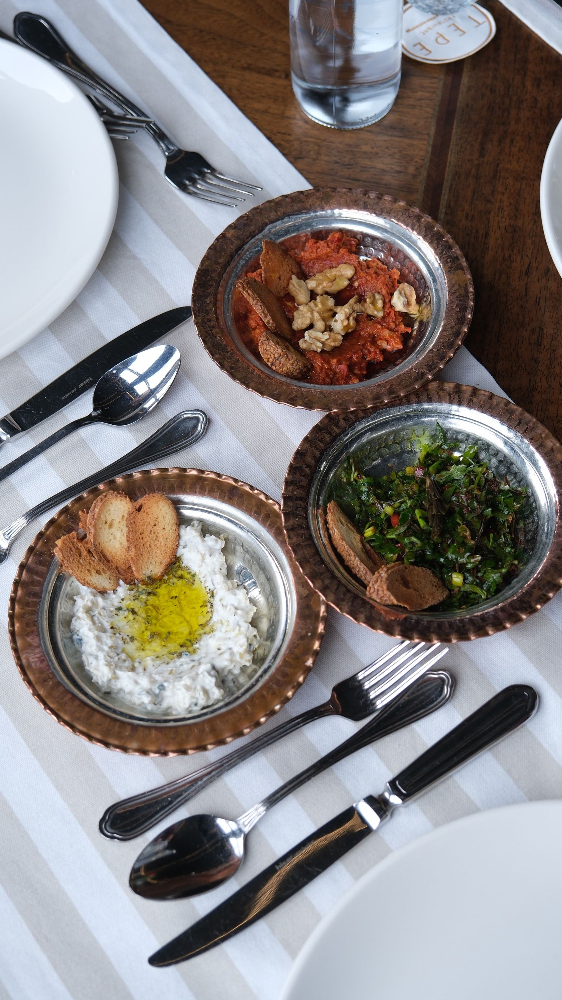
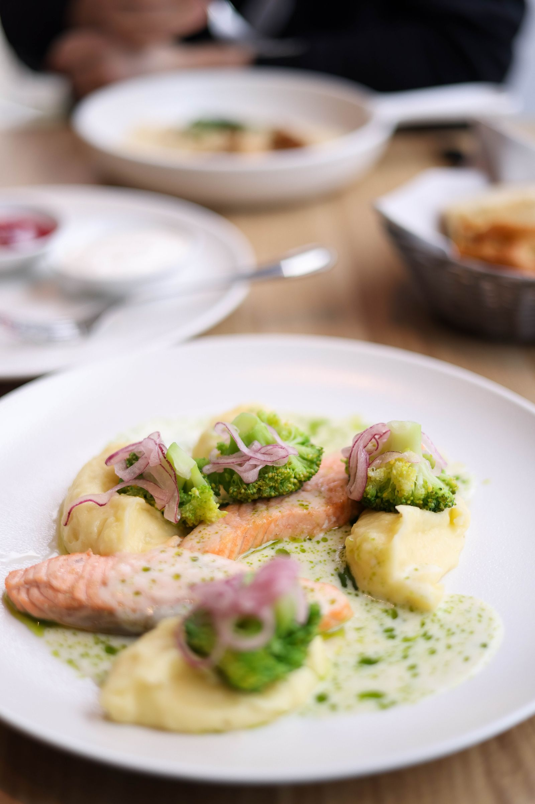
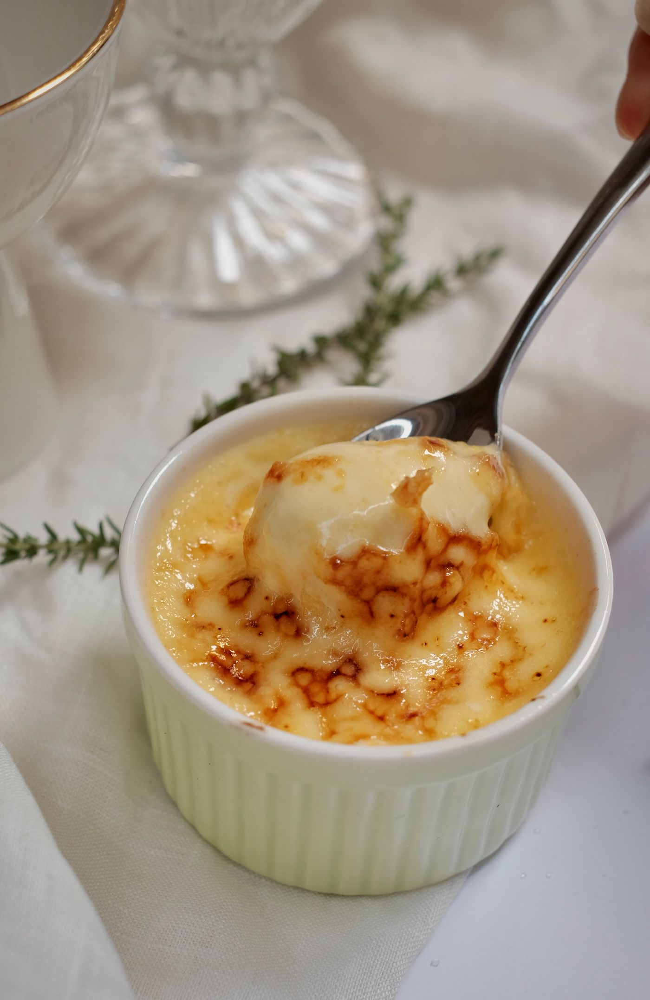

Imagery represents the proposed visual direction; dishes shown are not prepared by a real Latitude Kitchen.
01 / Philosophy
A menu without borders, curated with intention.
Latitude is an imagined gathering place where recognizable dishes meet seasonal Canadian ingredients. Every plate is described as an interpretation—celebrating culinary influence with curiosity, context, and care.
02 / Signature experience
Taste the World
Explore twelve cuisine directions in this adaptable showcase.
A starting point for any cuisine—every client experience is tailored to their menu, story and guests.
Swipe or select a cuisine
LAT 43.59°

Italian cuisine · Naples influence
Ember Margherita
The comfort of a neighbourhood pizzeria, carried by smoke, bright tomato, and torn basil.
Menu highlightsEmber Margherita · Burrata & citrus · Olive-oil cake
Key ingredients
Fire-roasted tomato, fior di latte, basil, olive oil
Dietary guidance
Vegetarian
Spice
None
Pairing
Italian Aperol Spritz
03 / Menu discovery
The global table
Designed for sharing. Each dish is our contemporary interpretation of a culinary influence.
Ontario wine from $13 · local beer $9 · sparkling water $6 · coffee or tea $5.
Alcoholic and zero-proof selections
From $5
No dishes match those filters.
Dietary note: “Gluten-conscious” means prepared without gluten-containing ingredients where indicated; shared preparation areas mean cross-contact may occur. Please discuss allergies with the restaurant team. No dish is guaranteed allergen-free. Responsible service: Alcoholic beverages are available to guests of legal drinking age. Please enjoy responsibly. This demonstration does not offer alcohol ordering or payment.
Alcoholic beverages are available to guests of legal drinking age. Please enjoy responsibly.

04 / Seasonal tasting
Five places. One unfolding evening.
A fictional five-course tasting journey moves from bright coastal flavours to smoke, spice, and a final crack of caramel.
01Pacific crudo
02Mediterranean mezze
03Market vegetable
04Ember-roasted main
05Burnt vanilla
Sample tasting · $89 per guest
05 / Our point of view
A restaurant shaped by curiosity.

Licensed atmosphere photography represents the proposed experience, not actual Latitude Kitchen guests.
Latitude begins with a simple idea: food can feel familiar and still take you somewhere new.
The fictional kitchen studies techniques, ingredients, and dining rituals across regions, then brings them into a focused seasonal menu. Influences are named openly. Interpretations are made thoughtfully. The table remains relaxed.
“Not a tour of everywhere—an invitation to notice the connections between places.”
06 / In the room
Made for long dinners.



Licensed photography represents the proposed visual direction and is not a claim that these dishes were prepared by this fictional restaurant. View image credits.
07 / Gather differently
Private tables, shared stories.
Corporate dinners, family milestones, cocktail gatherings, and full-room celebrations can follow the same globally inspired rhythm.
Family-style or tasting menus for an imagined group of 12–36.
02
Celebrations
Flexible formats for birthdays, anniversaries, and family gatherings.
03
Corporate hosting
Polished lunches, reception plates, and full evening service.
04
Catering
Curated packages for pickup or a future staffed-service integration.
Tonight at Latitude
Evening service, in our imagined dining room.
Dinner service
Local time
Featured tonight: the five-place tasting journey.
This local-time display does not indicate live availability.
08 / Reservation demonstration
Meet at Latitude.
This guided form is a portfolio demonstration. It never checks availability, creates a reservation, transmits information, or stores personal data.
1Party
2Time
3Details
4Review
09 / Visit
Find your way to the table.
Fictional demonstration address 43 Meridian Lane Mississauga, Ontario L5B 0A0
Hours
Monday–Thursday
5–10 PM
Friday
5–11 PM
Saturday
4:30–11 PM
Sunday
4:30–9 PM
Fictional underground and bicycle parking are available. The imagined entrance, dining room, and washroom are step-free and wheelchair accessible.
Portfolio Demo · Praxis Builds
Built around your restaurant.
This is a functional portfolio demonstration by Praxis Builds. Your version can be tailored to your cuisine, menu, brand, reservation flow, ordering provider, accessibility needs and the way your guests actually use it.